What makes us human?, Digital Video, 2018
The following found footage is a collection of visuals from the documentary, HUMAN on YouTube and audio from Soundcloud meant to bring about reflection and question. The concept I had in mind is the question: What makes us human? I envision this installation to be played in a dimly lit room with a vast projection of this video on a wall, and those who view it can sit on bean bags and be able to reflect or connect (or both) with the video on a deeper level. I chose to appropriate the material I found from a documentary about humanity because I wanted to communicate the same topics in my video as well and I admired the variety of diverse individuals and footage that I found when I envisioned what I wanted to communicate through this project; the original documentary was presented on YouTube in its full length, and I used and edited certain clips I admired for this video project.
Untitled, Digital Video, 2019
The following video is a collection clips and footage I collected of various works of art and formed together into my own abstract video. For this project, I wanted to explore what is art and what is considered as art to others and myself. Is it allowed to be something simple, or complex? In this video I wanted to communicate the diversity we can find in all art and possibly unlearn the preconceived notions we carry with us as far as what we think art is.
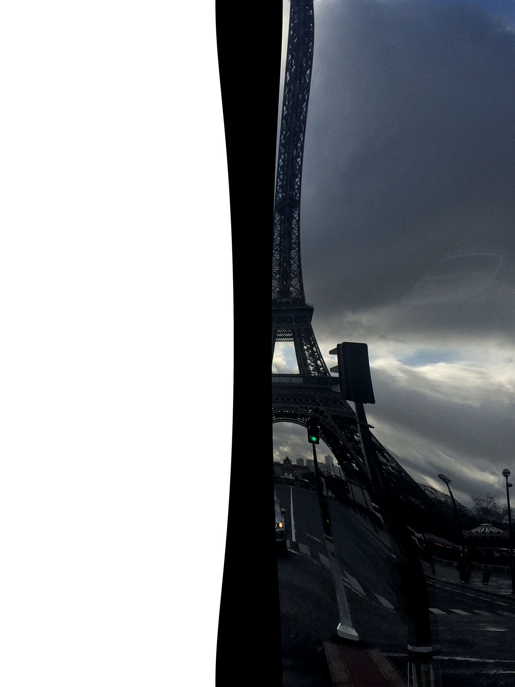
Eiffel Tower, Digital Image, 2018
I chose to glitch an image that I took of the Eiffel Tower when I traveled to Paris two years ago. During the time spent in this city, I fell in love with everything about it. I admired how there was history attached to every building or structure, and it was an interesting contrast from the Bay Area’s urban environment. I wanted to distort this image I took of the Eiffel Tower because I believe it would be interesting to change and manipulate a structure the whole world deems as perfect and famous for its shape and architecture. I named it the Eiffel Tower of Terror by combining the dark image of it that I
was trying to achieve, and the name of the Tower of Terror ride in Disneyland to further add to the image or persona I had originally envisioned for it.
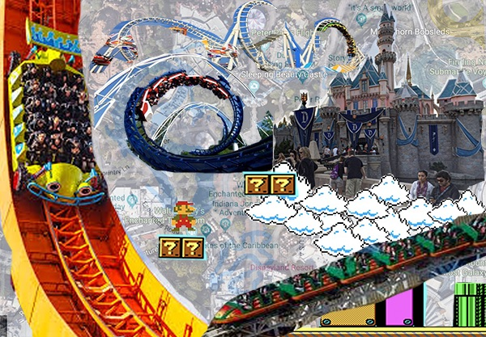
Composite Image, Digital Image, 2018
I chose to use the images/location of Disneyland. For some reason, the first area that came to my mind when I thought of a location was Disneyland. It is an interesting location because it is widely known by many people, and I wanted to see what I could change it into. This place was an important part of my childhood, and I will always remember my visits to Disneyland growing up. I chose to create a video game type of collage, mixing certain aspects of Disneyland, with video game features/characteristics that I grew up playing with. Usually, the goal in many video games is to get at the highest level, which I represented with the real image of the castle. I also added different roller coasters to give it a hyper real, otherworldly effect. To continue with the video game theme, I added other images that are popular in the Super Mario games such as the blocks he jumps on, and the clouds beneath the castle to make it look as if it was floating. I chose to use a mixture of images from real life as well as video games to compare reality with video games. Many people use video games as a form of an escape from the world, which can often end up being someone else’s entirely different reality, so I wanted to bring these two interesting worlds together in order to enhance both their meanings. The placement of my images in this collage symbolize the level of “greatness” with each image. I made the castle float in the air, and made some roller coasters larger than others to indicate that I think they are both intimidating and in your face usually. The function of my image in my opinion, seems overall lighthearted and reminiscent of my childhood. I would choose to print the image large or use it as a screensaver.
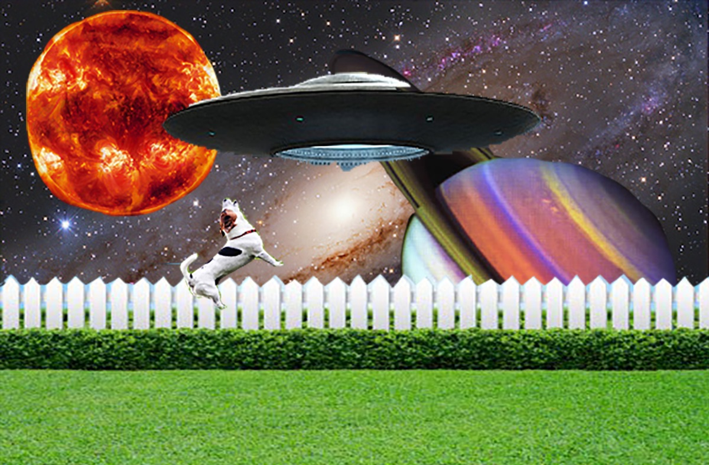
Sound Art Project, Digital Sound, 1:00, 2018
The concept behind my Sound Art project was to use a topic that interests me, which eventually led me to using an alien theme. I always thought that the topic of extraterrestrial beings and UFO's was interesting, so I decided to create an abduction sound scenario where a dog is being abducted, by using a dog barking audio, and an alien spaceship audio. I did research on abductions and situations where certain individuals claim to have been in the presence of aliens, and many accounts stated that there was usually a white noise created by the UFO, so I recorded my own white noise that is in this audio. The way I envision my sound to be ideally experienced would be to look at the image I created and imagine the abduction play out in your mind with the audio in the back to bring it to life.
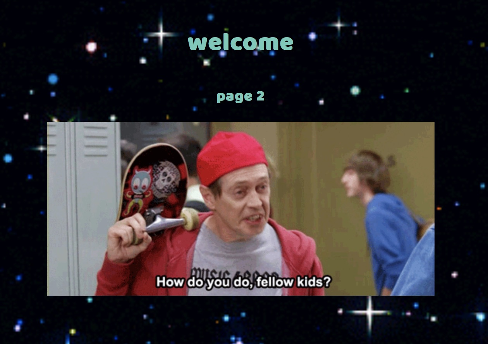
National Calzone Day, Interactive Net Art, 2018
The title of my Net Art project is National Calzone Day. Being new to creating net art, there were many different directions I could have explored for this project. Personally, a quality about the internet and media I have always loved and been fascinated by is gifs. Ever since they became popular (or since I started noticing them) in middle school, I have always wondered how they were made and I admired the simplicity of what they consist of. A few seconds of a video looped over again can add a different personality to what you are using it for. For my Net Art project, I wanted to figure out how to incorporate them in my website for comedic purposes. Along with this, gifs are somewhat an entire form of their own genre and entertainment. When I used to spend more time on Tumblr, (where gifs are extremely heavily used) I used to be able to look at gifs for as long as I possibly could because they were new and entertaining to me, and I believe that is what stemmed my interest in incorporating them in my Net Art project.
Click here for site
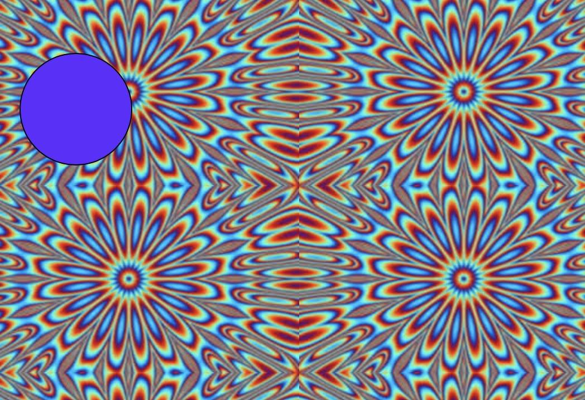
Spinning in Circles, Interactive Net Art using p5.js, 2018
For this project in particular, I used a combination of code and techniques demonstrated previously in class to create my own interactive website with p5. Being new to coding, javascript, and the overall exciting world of Digital Media Art, I am very interested in creating an interactive aspect with the projects I create. I chose to use certain code, such as mouseX and mouseY, variables, and mousePressed along with a different changing background image for this assignment. The overall concept I was exploring for this project in particular was utilizing code to change what the viewer sees when they click on their mouse and drag it through the screen.
Click here for site
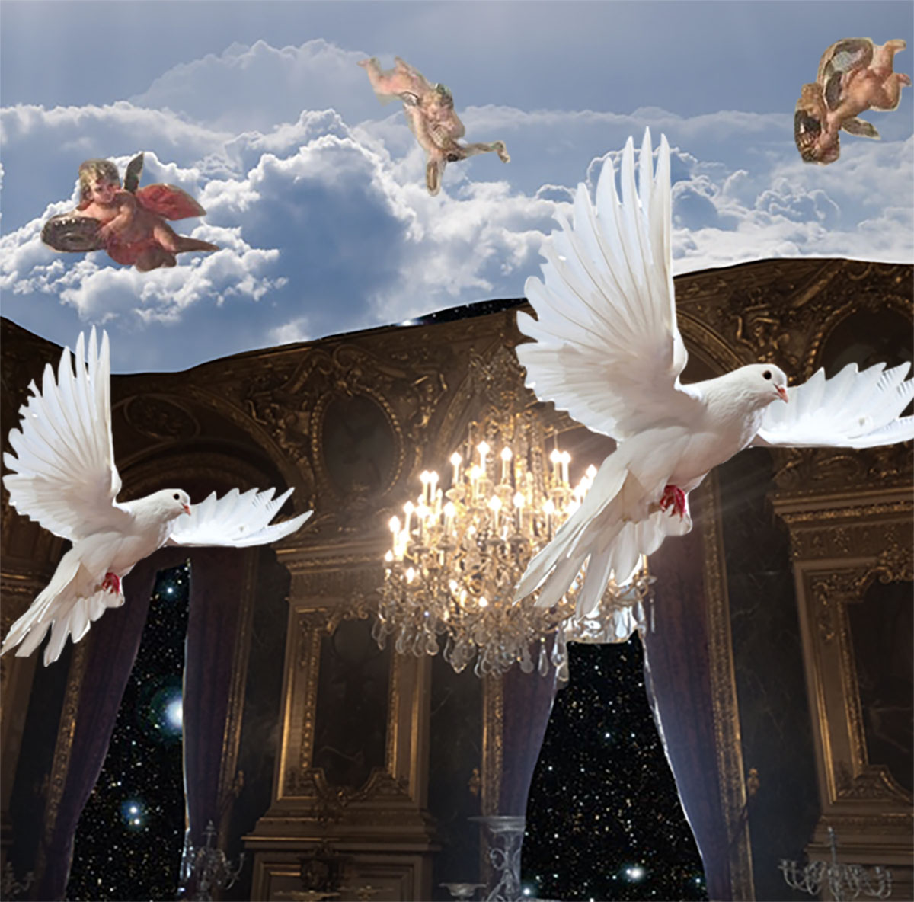
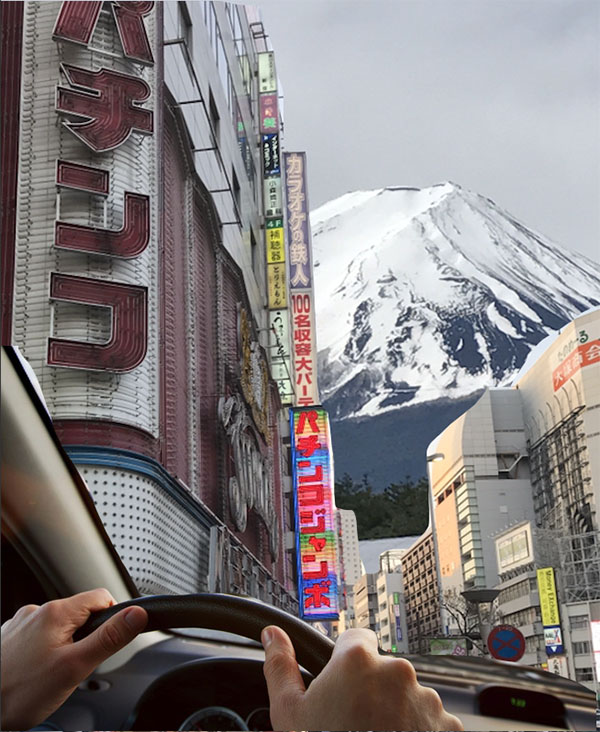
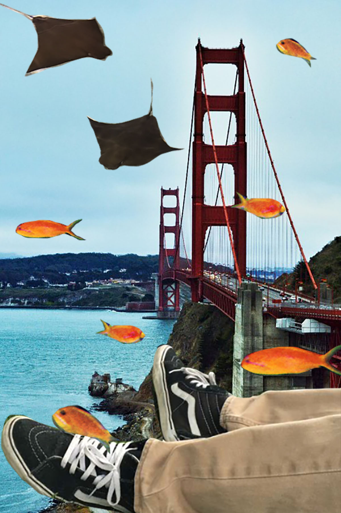
Different Dimensions, Digital Images, 2018
For this project, I chose to create three composite images through Photoshop. My favorite form of creating art through technology is by using Photoshop and joining various images together to create one unique image. I admire Composite Art because it gives the artist the opportunity to completely use their imagination and create something completely different and “out of this world”. For these reasons, I decided to make my own composites and explore my mind to see what I could create.
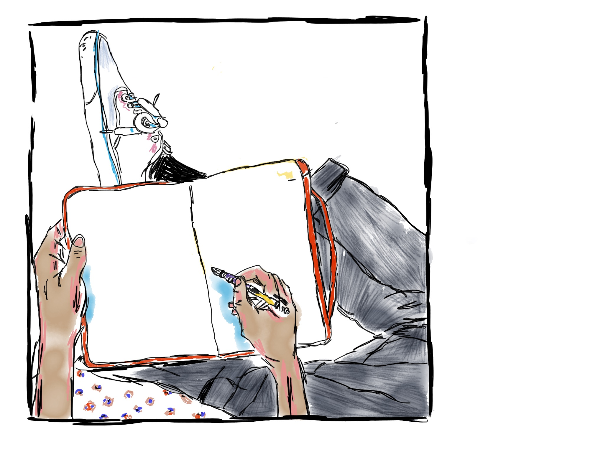
Writer's Block, Digital Drawing, 2017
This digital drawing was done by using an app on the iPad. I was interested in learning new ways to create art in my free time and I discovered that I really enjoyed creating digital drawings such as this one.
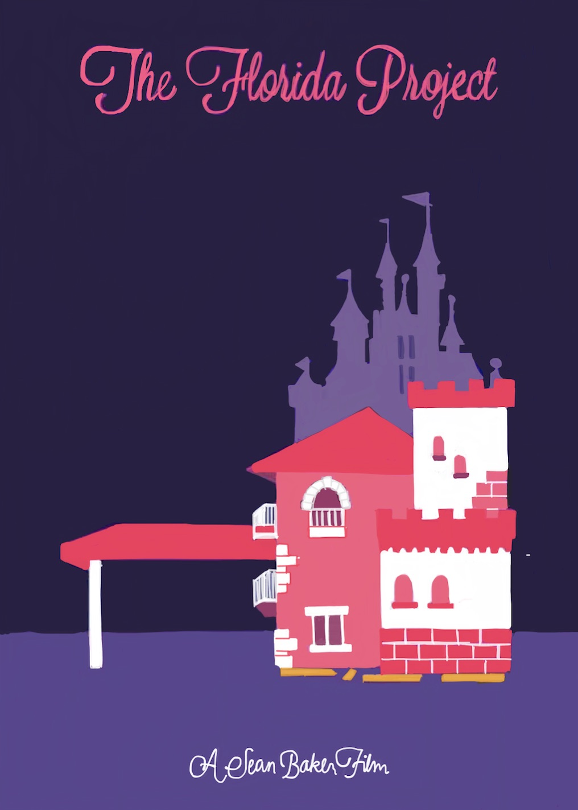
The Florida Project, Digital Drawing, 2017
I created this alternate movie poster for the film, “The Florida Project”. After watching the movie, I was inspired by the cinematography and use of vibrant colors in the setting for this film, which encouraged me to draw my own version of a poster involving my perspective of the setting of this movie.
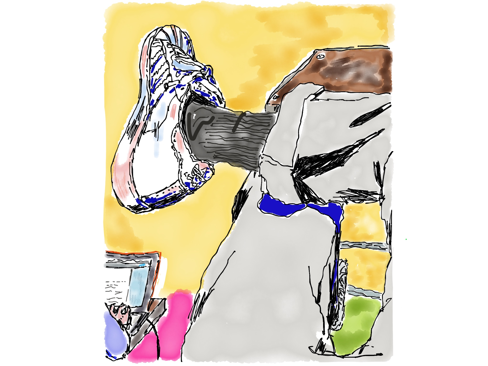
Boredom, Digital Drawing, 2017
I drew this digital image to go along with another project I had done previously a few years ago by using a drawing app on the iPad.
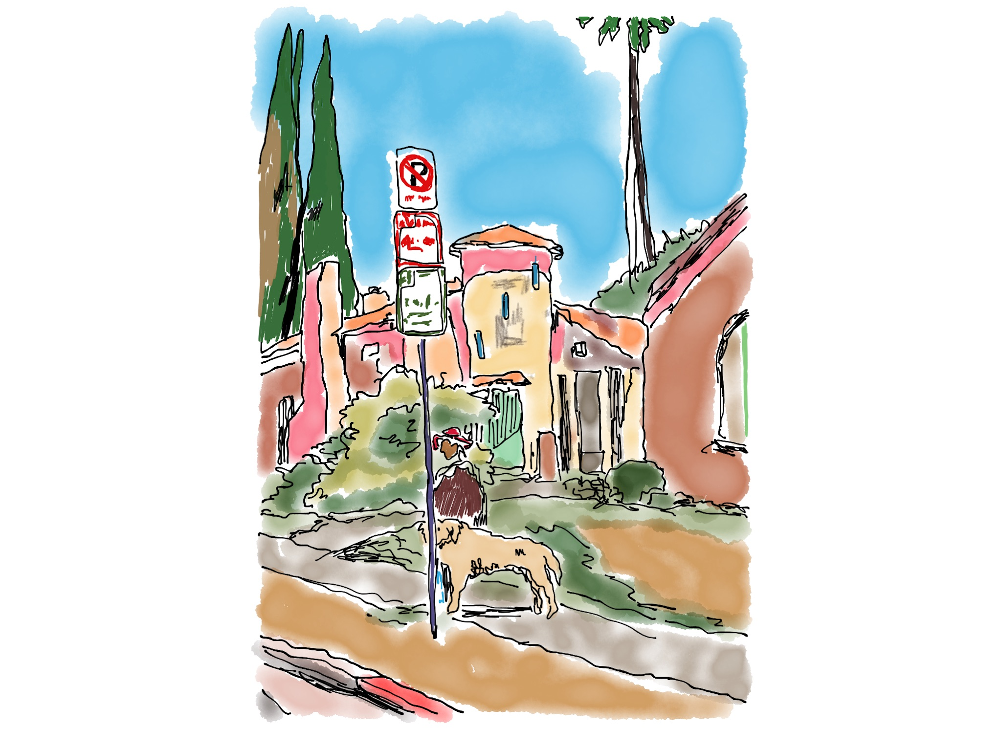
Surroundings, Digital Drawing, 2019
I drew this image by using an app on the iPad after observing my surroundings one day. I was interested in recreating my surrounding environment and seeing how I could adapt it as I was sketching it out and adding my own twist by using different and bright colors.
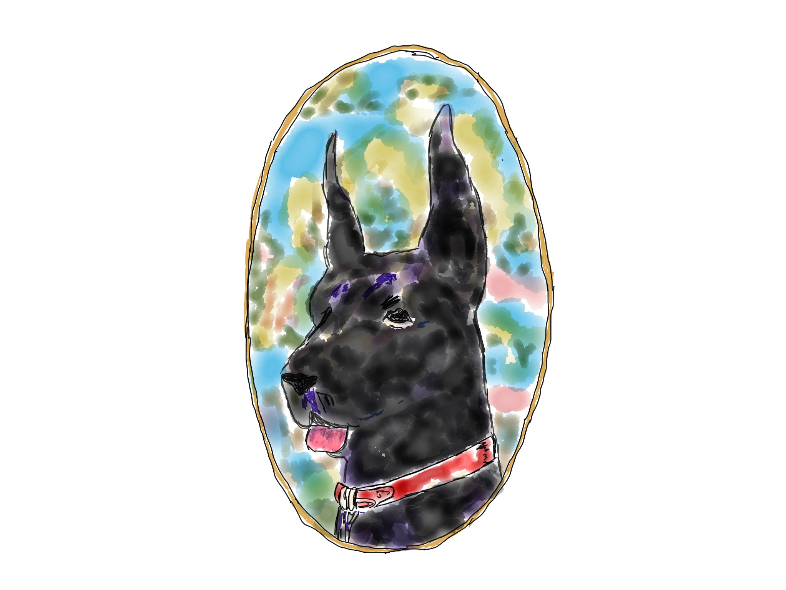
Portrait of a Dog, Digital Drawing, 2019
This is a portrait I drew of a dog, done on the iPad. I wanted to create something lighthearted and fun to draw during the process. I like to include vibrant colors in my drawings and make images that are unique, so I explored that in this image.
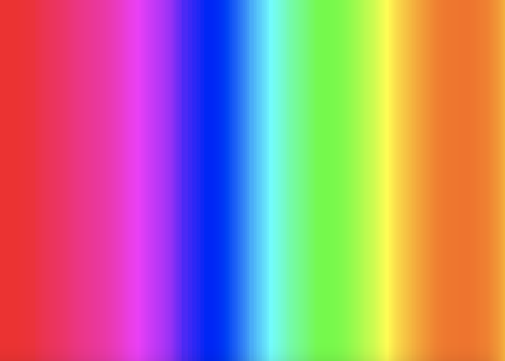
Digital Rainbow, Interactive Net Art using p5.js, 2019
For this project, I used a combination of code and techniques from the p5 website to make my own interactive form of codeart.
Click here for site
Calm Confusion, Digital Video, 2019
For this project, my vision was for it to be installed in a gallery space with each clip projected on a different wall moving continuously. I wanted the space to feel very simplistic and quiet, so that the viewer can focus on the videos in front of them and they could choose to either sit down on the bench, or stand up and walk around the room that my videos are projected in.

Virtual Haunted House, Interactive Net Art, 2019
The title of this Net Art project is Virtual Haunted House. For this assignment, I wanted explore my creativity when it comes to coding. I always thought that haunted houses were interesting because you don’t know what is about to happen next with every direction you choose to go in, so I created a similar experience to that through this project.
Click here for site
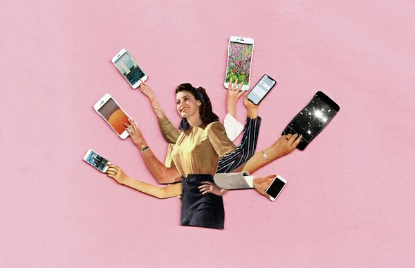
Generation Z, Interactive Net Art, 2019
For this Net Art project, I dedicated it to my generation, known as Generation Z. There are so many interesting topics and subcultures that have been created through this generation. I gathered together as many relevant topics as I could for this project and found interesting articles to correspond with each topic that the viewer can click on and discuss them further.
Click here for site
Nostalgia, Digital Video, 2019
The following video is a combination of clips that personally bring about the feeling of nostalgia to me. For this project, I wanted to explore the feelings of isolation and missing where you are from. College can be a confusing experience, but you have to keep moving on so this video expresses the moments of reflection I often have.
umika jr., Web Based Interactive, 2020
The tools I used for this project were p5, GitHub Desktop, and Atom. I used the p5 sketchpad to create the base of the code in which you can see the avatar was made on. The reference section in the p5 website was very helpful as well as getting help from other people and watching demos on how to make my avatar come to life by adding animations, and audio visual movements to the avatar. To create its own website for itself, I used GitHub Desktop and Atom to host my project. My inspiration for this avatar was my dog. I made my avatar to look just like her because she is my “spirit animal” in a sense and was the first thing that came to my mind when I thought of what I could create out of this project.